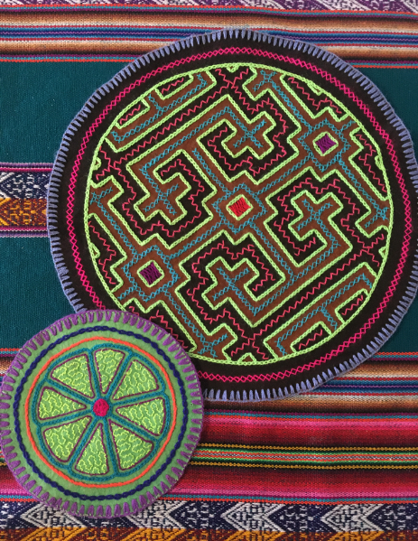
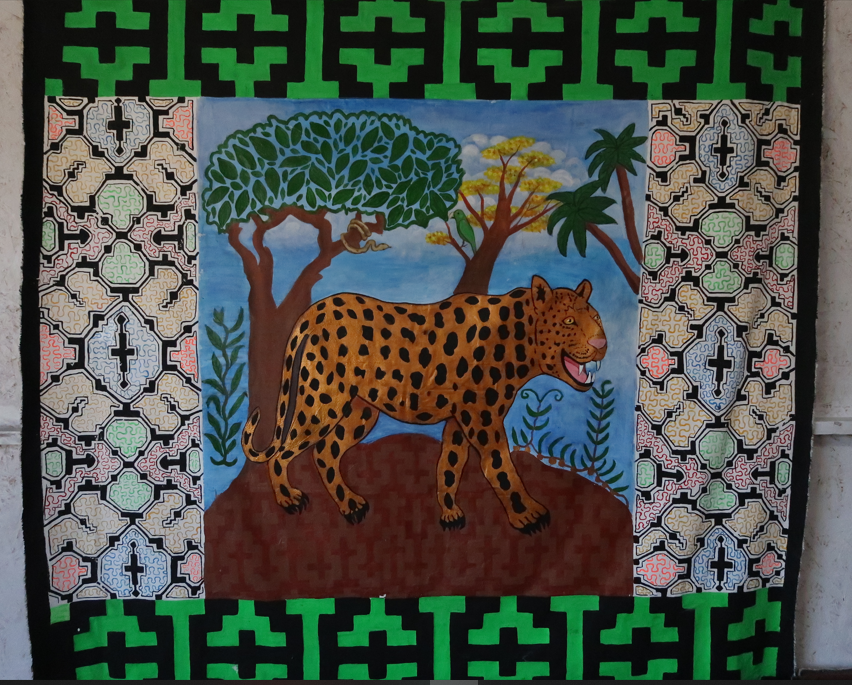

The art is a woman with endless power:
Sadith Silvano and the visionary art of the Shipibo-Conibo
In the beginning was the snake.
A huge anaconda was sliding slowly through the darkness and the patterns on her skin were shining brightly. The snake was singing about them and the sounds were dripping into black space around her enormous body. Each sound was one pattern and when they all had been sang, they got united and materialised as the whole Universe and the humans. This is the legend about the creation of the world told by the Shipibo-Conibo, indigenous people living along the Ucayali River in the Amazon rainforest in Peru. With an estimated population of 35,000 souls, the Shipibo-Conibo are one of the largest ethnic groups in Peruvian Amazonia and nowadays in big cities like Lima, Pucallpa and Yarinacocha. Their native language belongs to the Panoan family. The scientists estimate that first ancestors of the Shipibo-Conibo came to the shores of the Ucayali River around 1,500–2,000 years ago.
One thing that strongly distinguishes the Shipibo-Conibo community from other ethnic groups of Amazonia is the extraordinary art based on geometric patterns called kené. In the legend mentioned above, all the songs performed by the primordial anaconda are about these patterns. They cover the body of the snake too. However, kené do not play a mere decorative role, it is something bigger. The patterns represent a whole system which codifies complete knowledge about the world, history, aesthetics and traditions of the Shipibo-Conibo. This is a system which tells us about their connection to the Universe, their own consciousness, the other human beings and the earth they come from and walk on. This is a way to honor the ancestors. It helps people to keep their own identity facing the modern times. And, last but not least, this is a way of economic survival.
The word kené or kewé means „pattern” and relates to a group of geometric motifs which traditionally cover various surfaces: human skin, textiles, ceramics, everyday items, jewelry, ritual objects, and even the walls of the buildings. Kené patterns can be painted, embroidered, woven: there are many techniques used to create them.
I was so fascinated by the mesmerizing beauty hidden in the endless maze of kené, that I decided to go to the district of Cantagallo, a place in Lima where more than 200 Shipibo-Conibo families live nowadays. I visited a native artist Sadith Silvano who I had met in the Sacred Valley near Cuzco. Flying from Cuzco to Lima I could not stop thinking about that meeting. While gazing through the airplane window at the brown and red mountains and the shining lagoons, I understood that I could not leave Peru without trying to understand what Sadith's art means. A rare magnetism emanated from her works. They were different than any other crafts I had seen at the Peruvian markets. When Sadith was singing, running her finger across the stitches of the patterns, something was vibrating in the chest of the listener, as if she had touched the centre of the heart: an universal point that everybody has, no matters where she or he comes from.
When I arrived in Cantagallo, Sadith was out and I had to wait a while outside her house. I was standing on the street and looking at some modest houses and beautiful murals that covered their walls: one with jaguar, others with exotic flowers, birds and fish. The air was dry and full of dust, there was no pavement on the street, but right there, behind your back, the Amazon jungle was blooming on the walls. And then I saw Sadith: she was walking towards me, with buckets of paint for the next mural in her hands. She was smiling from afar. Colorful kené earrings she wore were blinking in the sun like feathers of an exotic bird. „Hola, amiga.” — she said. Hello, friend.
One of the houses in Cantagallo, covered with Amazonian murals.
I came to her with a list of questions. However, when we sat down in her house, in the main room, which was at the same time the living room, atelier and space for presenting finished works, our conversation took other direction than I expected. This was my first interview ever. We sat at the table, facing each other, and from the first moment I knew that Sadith would set the tone of that conversation. We would talk like two women, two artists, two sensitive human beings. The art turned out to have a face of a woman with endless power that flows from Sadith’s heart to mine and vice versa.
Traditionally only women create kené (men do it rarely). The knowledge is passed from generation to generation: daughters and granddaughters observe how their mothers and grandmothers work. Kené art always flourishes in the community. However, the compositions are individual, because every artist creates her own style with time. Sadith says that the Shipibo-Conibo are never alone, because what really matters is the community, family, friends. Intimacy with the people we care about. The power and creativity of the group come from the identity, tradition and love. The Shipibo art is all of it.
Sadith and her sisters learned kené from their mother. „The mother's duty is to teach her children about traditional knowledge in order to keep their cultural identity which is very important for us. It is hundreds of years old. You cannot find it at the university or school.” — Sadith says. She started her education when she was three years old. First she learned how to pierce the seeds used for jewelry. Then she started to make her first bracelets and ceramics. She remembers that her mother was a demanding teacher. Seven girls studied under her watchful eye, perfecting their craft skills to become maestras some day. And the proper craftsmanship cannot be achieved in one day: it requires years of attempts and errors, fatigue and recovery, long hours spent embroidering, copying patters, collecting plants to prepare the pigments to paint the ceramics. Sadith laughs and says that at that time she used to lose the artistic competition with her sisters. They worked faster and were more scrupulous. Today five of her sisters are artists, but after all it was Sadith that tied her life to kené on all levels: emotional, spiritual, material and visual
Bracelets with traditional kené patterns.
The Shipibo-Conibo are a matriarchal community. The anaconda, cosmic mother, represents feminine energy. The women are artists and through the art they become the essential element that creates the reality, adorns it with kené, gives it new energetic meaning and heals it in this way. The patterns created on material surfaces represent immaterial patterns, which can be accessed through the sacred plants called rao. The energy of the patterns that we can see in the mind, dreams and imagination, comes directly from the plant we take. The Shipibo-Conibo call it koshi: it is an invisible, but positive force. The visual harmony of kené is the koshi in its material form and its task is to heal and embellish. There are many rao plants used in the rituals, but the most important ones for the Shipibo people are piripiri and ayahuasca. Ayahuasca, called nishi, makes you see the colorful energy of the plants. Its shape of a twisted liana is identified with „(...) ronin, the cosmic anaconda, the primordial being, the mother of 'ayahuasca' and all the waters, the water source of all the patterns existing in the past, the present and the future.”* The other plant, piripiri, called waste, sharpens the eyesight, brings the visions and, according to the beliefs of the Shipibo-Conibo, it grew out from the ashes of a burnt ayahuasca plant. All the rao plants are just called medicina, the medicine. They are not recreational drugs, but sacred, visionary plants used in ceremonies and rituals. They require a lot of respect and, if used in an improper way, they can be revenge on a careless user. This way a psychodelic experience becomes a holistic ritual for the body and the soul.
Sadith emphasizes that the rao plants are the clue element to properly understand the concept of kené. „(First) your mother prepares you.” — she says. — „When we are young, we know nothing. You evolve with time and you become a specialist. This comes through the sacred plants which cure the eyes, like piripiri. When we apply it on the eyes, we see the patterns. Then you see what you want to do and you reflect it (in your work). You work with the visions. This way I learned it, from nothing.”
She tells me more about her ayahuasca experience when we talk about the traditional singing related to kené: „There are three types of singing: icaro** mashá*** and joke songs. We perform icaro songs when we take ayahuasca. You are connected spiritually, you enter the world of the sacred plants, you start to flow and you give in to it. (The substance) goes through your veins, it goes to your soul. You are connected and start singing. When you take the sacred plants and sing, you open. You cry inside, in your soul. When I take ayahuasca, I feel united with everything around me, I see all the colors and I start singing. This is my free interpretation, my own voice, my own artistic expression.”

Textiles embroidered by Sadith Silvano. The smaller one symbolizes the seed of ayahuasca.
The kené patterns are called cantos pintados, painted songs. Every traditional motif has its song. The songs of the geometric patters with the final point, called ronin**** kené, are performed in a different way than the infinite patterns mayá***** kené. The whole performance depends on the artist and her individual interpretation. The mashá songs are similar to the icaro songs, except they cannot be used during ayahuasca ceremonies. The joke songs are often part of the social events and meetings. They take a form of a spontaneous performance to celebrate the time spent together and to honor the guests.
Sadith lifts one of the embroidered textiles and starts to sing, running her finger across the lines of the stitches like on a sheet music. Her voice fills out the room and the space between us. It is a magical moment, even if I do not understand the words. Kené singing is extraordinary and moving. It takes you to other space and when Sadith ends, I want to ask her to continue. I could listen to her for a really long time, with my eyes closed. It is like taking a bath in strange, but somehow familiar sounds. It is very touching and brings joy and lightness to the heart. Many tourists who buy Shipibo-Conibo crafts do not know this therapeutic role of kené songs. I am very happy that I have a chance to hear and feel it live.
Kené brings all the senses together: colorful images stimulate the sight; singing, the hearing. We touch the textiles and ceramics, we move our fingers across the convex surface of embroideries, we can smell the natural pigments extracted from plants. Every element gives us information about material and immaterial reality. I see Sadith's works and recognize animals from the Peruvian Amazon, like toucans who symbolize love and loyalty, just like white doves in Poland; hummingbirds that bring joy and peace; triangle teeth of piranhas, crouching jaguars and majestic anacondas, all of them giving power and protection. I see white cups of angel's trumpets and pink petals of hibiscus, my favourite ones. I see seeds of ayahuasca, embroidered in a form of small flowers. The geometric patterns create serpentines which look like rivers crossing the jungle. All the motifs and shapes come and flow together, go straight and then turn, and then go straight again. The symbol of the cross repeats a lot. I know that it symbolizes the ancestors. All these small and big art pieces are not mere decorations inspired by the Amazonian reality. First of all, they carry knowledge and emotions of many, many generations before us. I came here from other continent, other culture, other nation with completely different history, but the direct beauty and wisdom of kené fill in my heart with joy and gratitude.

One of the paitings of Sadith Silvano. The jaguar is one of the most important power animals.
The main source of inspiration for Shipibo-Conibo artists is the nature, as well as the love and respect which should be the foundation of our relation with the world. In this relation the whole world transforms into our home. We do not have to conquer it by force. The home and its residents should be treated with affection and understanding. „All come from Mother Earth. The nature provides us with all what we have. Without the nature we are practically nothing.” — Sadith says and her eyes are shining. — „The most important thing is the Amazon. This is our source of food, clean air. And the animals: we should take care of them, because they are just like us. And we, humans, mistreat them... Animals like snakes or hummingbirds protect us. (We have) sacred plants, not only ayahuasca, but pana, chacruna, piripiri as well... We have many, many sacred plants. All these elements give us power and make us feel. They inspire us to feel joy, harmony, connection with our family.”
The women who create kené do not prepare sketches of the patterns, nor do they use any special tools to apply them equally to the surface. All the compositions come directly from the visions and the mind of an artist. The graphic elements join together and create a labyrinth. The real mastery lies in planning and joining the lines which should be delicate and precise. Traditional textiles were black and white or reddish-brown when dyed with mahogany. The techniques changed when new materials started to be available for traditional artists. Nowadays we can enjoy colorful, psychedelic patterns that attract tourists from all the world. Single symbols are still rooted in tradition, but kené is a living art and it transforms constantly. Some patterns go out of fashion with time, other become more popular. The designers who create new compositions are open to be inspired with other traditions. „An artist should be dynamic, otherwise her audience gets bored.” — Sadith says. Her creativity reflects these words perfectly: she expresses her art through embroidery and jewelry, but not only. She is a singer, dancer, Soi Noma****** muralist, activist, translator, ethnic fashion designer, painter. In 2022 she went to Paris to open the exhibition „Portraits of the Multiverse” (Retratos del Multiverso), created in collaboration with photographer Ana Elisa Sotelo. In the past she participated in many individual and collective exhibitions. She finished an expert course in the field of knowledge about indigenous people thanks to a scholarship awarded by the University Carlos III of Madrid. She is one of the leaders who represent the Cantagallo community. And last, but not least, she is a mother of two adolescents. How did she get to this point of her life where she combines all these roles?
The art empowers women, not only symbolically. We cannot separate an artist from her background and personal life experience. The art is often the main source of income for Shipibo-Conibo families. Sadith's mother used to sell her own crafts, and then those made by her daughters, first in Iquitos and later in Lima. It was not easy. At that time the Shipibo-Conibo were strongly discriminated in the public space. „I saw my mother's effort. People did not buy her art. Sometimes I saw her crying, because people used to laugh at her. They laughed, because she was wearing traditional Shipibo clothes. It was different at that time. People did not know her culture.” — Sadith says and her voice is full of sadness.
One of the embroideries done by Sadith Silvano.
When Sadith was 13 years old, she decided to become a professional artist. The first stage of her career was dancing. „From an early age I knew that I wanted to be an artist. I loved to perform, I loved traditional dance. People started to hire me to dance. This is how my success began.” — she says. She used to dance for several hours during one performance. Small stones hurt her feet covered with blisters, then she came back home with fever, but she was happy. At the beginning she used to be paid with something to eat and drink after the show, but later on she started to earn her first money. In this way she was able to support the home budget and help her mother. With time she started to sell her own jewelry and more and more doors started to open for her. In 2008 kené was inscribed on the list of cultural heritage of the National Institute of Culture of Peru. In 2011 the artists from Cantagallo decided to register their activity and apply for master craftsman title. It was a great success for the people who had been working as ghosts for many generations. As a community activist Sadith understands how important it is for women to change the way they think about themselves. She fights against the lack of self-confidence, low self-esteem, economic violence. The need of personal independence was instilled in her soul by her mother. „She told me: daughter, never expect that your man will support you.” — Sadith recalls. — „Because one day your man will remind you the money he brings home. This money has not been made by your effort. As she said, so it was. I am a single mother, I have two children. Life was not easy for me, it gave me many blows, I have to say this, because it is part of me. Thanks to my mom I never expected to be supported by a man. Not all community women live from their own work. Many of them are supported by their husbands and they suffer because of different forms of discrimination. We are sick, mentally and physically. The art helps you to get your power back, like it happened in my case. My work is my husband. My art, my creativity are my men. The art is a part of therapy. Our ancestors had been able to endure a lot of bad things, but we came here to be happy, not to be mistreated. We have to show to the people that it is possible. What is the best alternative? The best remedy? What helps you to keep your mental health in a good shape? The answer is the art. If you want to paint or embroider, you have to focus, inspire, sing. Then you connect with the energy. The art is the best cure I received from my ancestors and I am grateful for that. The blackest days in my life... the art still heals you.”
It is not easy to find time for artistic development in such a busy schedule like Sadith's. A good organization is a key factor if you want to separate home and professional matters. Sadith gets up at four or five o'clock in the morning to prepare food for the day and send children to school. Later on she is busy with cleaning and other home chores. She puts the things in her workshop in order, she works a bit if she has time. In the afternoon the kids are home again, so she has to take care of them and do the laundry. In the meantime she receives visitors and customers, answers messages in social media, prepares content for publication, gives interviews. She knows that her effort is worth it: not only does the art let her earn money; first of all, it opens the doors to a completely new world. World she has never dreamed of. „The art gives you a chance, it is a chance itself.” — she says. — „I would never imagine that I would meet so many prominent people... It was a big wow for me. I would never think that I would stand in the Congress, go to the Government Palace, know the ministers and congressman, all those people, artists, sages... Wow, how this changes your life! The art alters the way you see. It leads you very, very far.”
The art transforms dynamically the position of the women in their traditional communities. They start to organize themselves, regain identity in their personal and social environment. They create new paths through tradition and are able to reject machismo and eliminate its consequences. „The role of a woman is to be a leader for other women in order to create the same chances. The chances I received.” — Sadith says. A Shipibo-Conibo woman is never alone. The sisters from her community always take care of her and share with her their power, creativity and affection.
A mural done by the Soi Noma collective in Parque Bicentenario in Lima.
For past few years Sadith had to struggle with different issues, both personal and professional. The official brand of Sadith Silvano is a personal victory over the system that ignores indigenous artists; dishonest middlemen who take profit from their work; and the plagiarism. „Other citizens and the government use the indigenous people to make money. They use them, they copy their work. The plagiarism has no value at all.” — Sadith emphasizes the last sentence. — „You do what you do with love, with your own inspiration... Ask anyone: what does it mean what you do? Why do you do this? If you copied someone's work, your own work is worthless. It has no value. There is always a real story behind a real artist.” And she continues bitterly: „The government should watch over the indigenous people. Those who live in the Amazon have the jungle. And the jungle is our gold. We have sacred plants, the medicine. But (the politicians) make us feel poor, because we do not have money or economic system. Neoliberals make money from us, they live from us. The indigenous people say: I am poor, we are poor and this is our fate. I used to think this way as well. I do not do this anymore. The state puts this idea into your head and makes you feel inferior. It takes away your chances, locks your life. And its real duty is to support you. If the state supported us, would indigenous people live like they do currently? What do you think? I do not think so. People of Cantagallo do not own the land they live in. The government wants big corporations to make their businesses here, not us, the Shipibo people. We are an obstacle for them, but this obstacle makes Peru great. In our own eyes we are much, much richer than they are. We organize events and when something big happens here, they come and take photos. And then they publish them and pretend that they help us. But the reality is that they use us. In the end, what is the state capable of?”
Sadith's family, like hundreds of others, moved from selva to Lima in search of a better life. The Cantagallo disctrict is the only place in the Peruvian capital where the Shipibo-Conibo can take refuge and live according to their traditions. However, it can become a real death trap. In 2016 Canagallo burned up completely. The fire was a trigger for the mass homelessness. People came back in 2019 when the government promised to help to improve the living conditions in the district. Unfortunately, those promises were never fulfilled. The pandemic was another blow. It was exceptionally tragic for the community which traditions pass directly from older people to younger generation. The virus, poor sanitary conditions and forced lockdown brought a tragic result. People could not leave the district, even to go to the hospital. They did not have medical care. They could not work and trade, which was the main source of income for most of the residents. „The pandemic hit us hard. It was a really difficult time. We do not have stationary shops, we sell on the street. People could not do this anymore. They did not have food. The older people were in the worst situation.” — Sadith says. At the same time she admits that the pandemic was a turning point in her life. She created the first set of textile protective masks covered with traditional Shipibo embroidery. „I had to recreate myself from the scratch.” — she remembers. — „I made only two models of the masks and many people came to buy them. People started to send me messages in social media. They saw the masks and started to buy and visit me. The national and international press came to Cantagallo, then the television. I made the masks without thinking that they would be such a success. A good and bad side of pandemic...” Sadith fell silent. For a while her eyes are full of sadness, but then she starts to talk again with a strong voice: „I am very proud of what I am doing, of my brand Sadith Silvano, of my collective of muralist women. More and more doors open for us. All the time we have new plans, we look for new strategies and we are united as women. We create a network of acquaintances. By joining together the forces of people from the coast, the mountains and the selva, we can demand justice. Without cooperation there is no justice.”
The art is what makes us humans. The ability of artistic expression is one of the skills that deeply distinguish us from other creatures living on this planet. The art is a medium to show our personal perception of the world and express our own consciousness. I ask Sadith what the Shipibo-Conibo want to exhibit through their visionary form of art. What elements are the most important in this modern reality we are living in? First what she mentions is our approach to nature, especially the rainforests of the Amazon which should be protected by the humankind. The Amazon is a constant source of inspiration, life force and food. Other key subjects are: connection between the men and the nature, equal treatment of all creatures and respect for the whole world. Equally important are love and tenderness that should be present in any interpersonal relation. She talks about our right to live in a place which we choose, not in an imposed one. All these subjects are present in both her work and her activity as a community leader. Her paintings created during the pandemic do not represent hummingbirds and hibiscus flowers. They still have the Shipibo aesthetics, they are still colorful and vivid, but at the same time they are gloomy. I look at one of them: three women with masks on their faces and arms raised into the air in a sign of a protest. Behind the woman on the left there are skyscrapers, blocks of flats and fog that always covers the city of Lima. The one on the right is wearing a small hat characteristic for the Andean communities and there are tops of the mountains, a river and a glacier behind her back. The last one, a Shipibo woman placed in the middle, has a ceremonial crown on her head and face painted with traditional kené patterns. I do not have to ask Sadith how to interpret this painting. I look in silence at the three women, three sisters with their shouting mouths covered with masks, and I think that some battles just have no end.
Sadith Silvano and the author of this article.
When I met Sadith for the first time, I felt that it was one of the most important events in my nine-month journey through Peru, Argentina and Chile. I started it in Lima and I finish it in Lima, though I did not plan to come back to this big, gray city. When I write these words it is the 27th of December, the year is almost over. I saw Sadith for the last time in September. Since then I traveled thousands of kilometers, from Atacama Desert to Argentinian Patagonia. Every morning I put on my wrist one of Sadith's bracelets, the one with protective anaconda patterns. Every time I do this, I feel stronger and more beautiful. The art is a living energy enclosed in the rows of colorful beads, embroidery layers, brush strokes. The art is a woman who transforms the energy into love. And love is what moves the world every day.
+++
In January, right after the New Year's Eve, I visit Sadith once again. I am able to catch her before I fly to Poland and she goes to Trujillo to open another collective exhibition. I bake cinnamon rolls and go with them by taxi to Cantagallo. The day is stuffy and steamy, the Peruvian summer has come to Lima. The doors and windows in Sadith's house are wide open: the temperature is very high inside because of the tin roof. I notice that Sadith rearranged her living room/workshop, moved the furniture and created a small kitchen behind the stand. She asks me if I like it, smiles and disappears in the kitchen. She is cooking dinner and she invites me to eat together. Again! The last time I visited her, I got a free meal too. I laugh and ask her if she cooks for every guest. She says that yes, it is a tradition that you share your food with the guests. It does not matter if it is a complete meal, some bananas or a glass of water. The guest's stomach should be filled with what you have. The same in Poland!
View from the main window of Sadith's house in Cantagallo.
We eat calmly, in silence. Then we speak about what happened in our lives since our last meeting. I ask her to show me some new paintings and she brings two of them, not finished yet. She prepares them for the exhibition in Trujillo. One of the paintings represents a uterus surrounded by two anacondas. It reminds me of some works of Frida Kahlo who used to paint such elements to express her suffering. But Sadith's painting says something different: her uterus covered with sparkling glitter celebrates the feminine power and consciousness, and the anacondas' bodies form a real protective barrier for what is inside.
Sadith is happy, because this year Soi Noma, the collective of muralist women from Cantagallo, will be registered officially. Maybe this will be a beautiful beginning of new adventures, travels and projects? Maybe there is a chance to invite Soi Noma to Poland? We do not know what the future brings. Today we enjoy the presence of each other and a cup of coffee we share before the ocean separates us. The neighbour's kitten fawns on us constantly. Sadith tries to chase it away, but the deal is done and her efforts are useless: the kitten firmly decided to spend this afternoon on our laps.
It is time to say goodbye. I hug Sadith several times and we take the last photo together. I leave her house and my soul is tender again, full of love towards other people. Will I see her again? I do not know. Some paths in our lives are so strange. I would never think that one of these paths would take me to Sadith's living room and then I would bring to Poland this story about female power and identity, about personal and collective experience of art. Our paths crossed, so that what resonates in the Amazonian heart of this woman can be heard on the other side of the world.
Thank you, Sadith, for this beautiful exchange of energy.
*** The word „mashá” refers to traditional rhythm and singing style. This type of singing is characterized by the use of high notes and repetitive phrases.
**** The word „ronin” refers to anaconda, the mother of all creatures.
***** The word „mayá” refers to the circular patterns that give the illusion of rotating.
****** Soi Noma means „beautiful woman” in Shipibo-Conibo language. It is one of the groups of female mural artists who live in Cantagallo and create murals based on traditional patterns not only in Peru, but as well in other countries of South America, the United States or Canada. More information about Soi Noma can be found on FB (Mujeres Muralistas Soi Noma) or Instagram @mujeresmuralistassoinoma